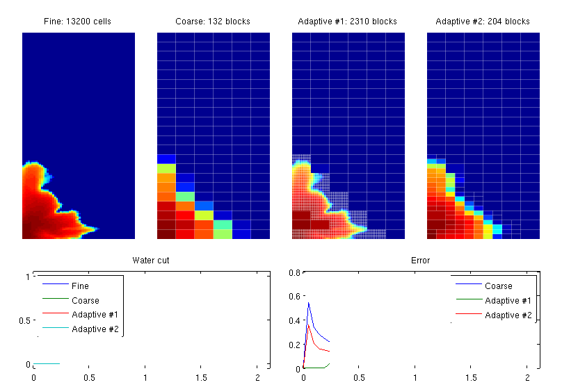
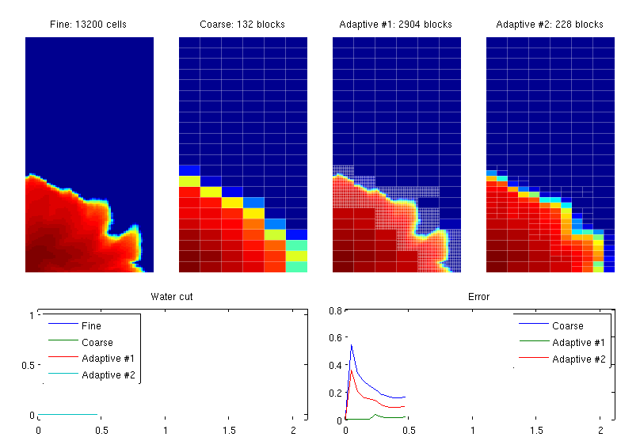
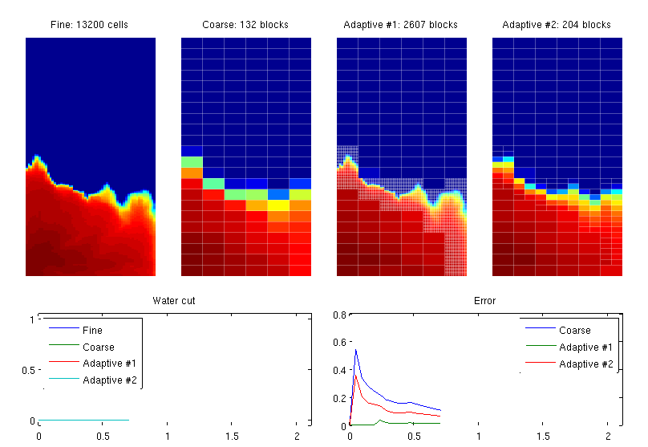
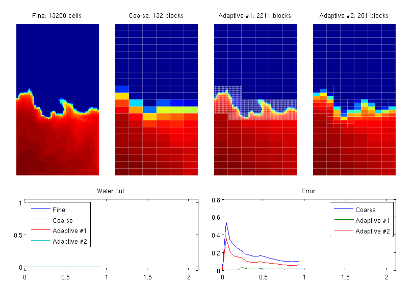
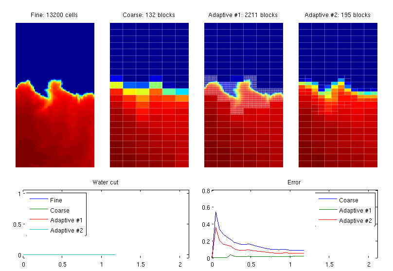
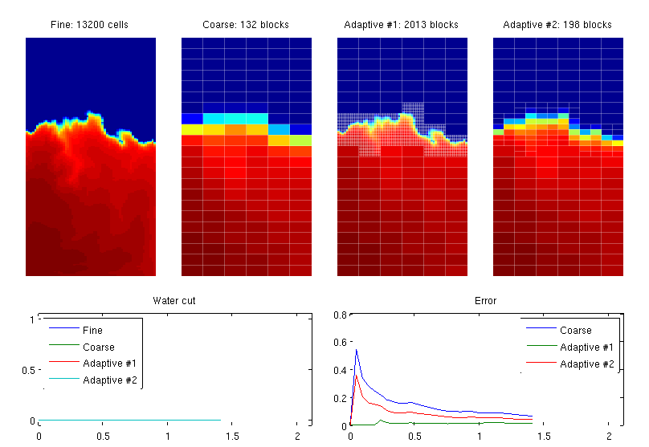
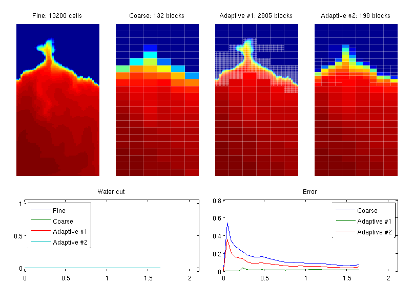
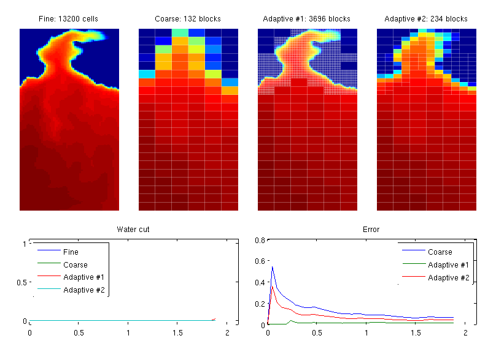
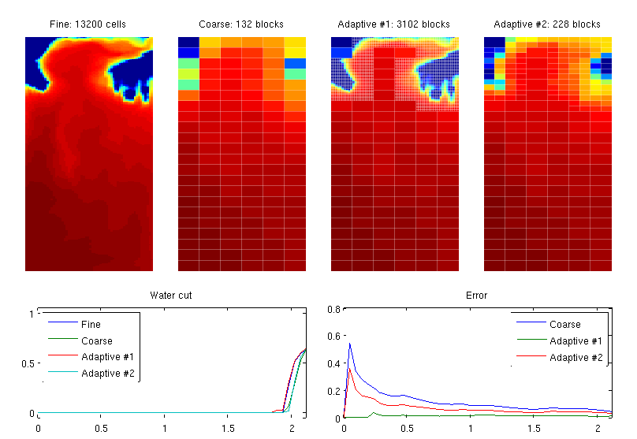

Example 6: Adaptive Refinement of Grid
In this example, we show how to make grids that dynamically adapt to an advancing saturation front. To this end, we consider a quarter five-spot with heterogeneity sampled from on layer of the SPE10 data set. We will compare the solution transport on four different grids (using pressure solutions computed on the fine grid):
- the original 60x220 fine grid
- a coarse grid, which is either a Cartesian grid (if useCart=true) or a NUC grid based on the time-of-flight indicator and refineUniform
- an adaptive grid with local refinement down to the original resolution
- an adaptive grid with local refinement to intermediate resolution
Where to refine is predicted by comparing the solution at the previous time step with a coarse-grid estimation of the next time step. Refinement can then be imposed either cell-wise for all cells where the discrepancy is larger than satTol or blockwise in all blocks in which the discrepancy is larger than satTol. For the block-wise refinement, we also refine block neighbors across interfaces with net flux below fluxTol to reduce coarse-scale smearing.
References:
- V. L. Hauge, K.-A. Lie, J. R. Natvig, Grid coarsening based on amalgamation for multi-fidelity transport solvers, September 2010, http://www.sintef.no/Projectweb/GeoScale/Publications/
Contents
Parameters controlling case setup
layer = 20; % which layer from the SPE10 model adaptBlocks = true; % refine all cells within a marked block useCart = true; % use Cartesian coarse grid satTol = .02; % refine if |s-s.old|>satTol fluxTol = 1e-2; % refine on both sides when net flux is below fluxTol gravity off
Initialize model problem and compute initial solution
Create grid structure, rock structure, and source structure, and initalise a fluid object. Note the viscosities. For simpler flow-pattern we use a quarter five-spot source/sink configuration, instead of the five-spot well configuration.
try require spe10 catch me mrstModule add spe10; end try require coarsegrid catch me mrstModule add coarsegrid; end [G, W, rock] = SPE10_setup(25); clear W %#ok<ASGLU> rock.poro = max(rock.poro, 1e-3); fluid = initSimpleFluid('mu' , [ 1, .2]*centi*poise , ... 'rho', [1014, 859]*kilogram/meter^3, ... 'n' , [ 2, 2]); src = addSource([], [1 G.cells.num], [1000 -1000]./day(), 'sat', [1, 0]);
Simulation parameters
param.nPres = 9; % Pressure steps param.nSub = 5; % Transport steps per pressure step pv = poreVolume(G, rock); T = .9 * sum(pv) / sum(src.rate(src.rate > 0)); % PVI -> time DT = T / (param.nPres * param.nSub); [NL,NU] = deal(50, 100); [NLF,NUF] = deal(10, 25);
Compute initial fine-grid solution
rf = initState(G, [], 0, 0);
S = computeMimeticIP(G, rock);
rf = solveIncompFlow(rf, G, S, fluid, 'src', src);
Create basic coarse grid and supporting data structures
We generate a quite coarse grid used for estimatating which regions to refine adaptiv around the advancing saturation front. This is the same grid throughout the whole simulation process.
iTOF = log10(1 ./ ( ... computeTimeOfFlight(rf, G, rock, 'src', src) .* ... computeTimeOfFlight(rf, G, rock, 'src', src, 'reverse', true))); iTOF = iTOF - min(iTOF) + 1; % Make static partitions and coarse grid pS = partitionUI(G, [12 44 1]); if useCart, p = partitionUI(G, [6 22 1]); else p = segmentIndicator(G, iTOF, 2*round(max(iTOF) - min(iTOF)) ); %#ok<UNRCH> p = mergeBlocks2(p, G, pv, iTOF, NL, NU); p = refineBlocks(p, G, iTOF, NU, @refineGreedy2); p = mergeBlocks2(p, G, pv, iTOF, NL, NU); [b, bi, pS] = unique([pS, p], 'rows'); end [blks, p] = findConfinedBlocks(G,p); CG = generateCoarseGrid(G, p); pvC = accumarray(CG.partition,pv); % Adding extra coarse grid fields to not stop in twophaseJacobian, getFlux CG.cells.volumes = accumarray(CG.partition, G.cells.volumes); CG.nodes.coords = zeros(CG.cells.num, 3); CG.faces.normals = zeros(CG.faces.num, 3); % To find coarse net fluxes on coarse interfaces from fine fluxes [nsubC, subC] = subFaces(G, CG); [sgnC, cfC] = signOfFineFacesOnCoarseFaces(G, CG, nsubC, subC); % Coarse rock and source structure rockC.poro = accumarray(CG.partition, pv)./CG.cells.volumes; srcC = convertSource2Coarse(CG, src); % Initially, all coarse grids are the same aG1 = CG; aG2 = CG;
Set correct fluxes for the state vectors
rf - fine grid rc - coarse grid, rc contains fine-grid and rcC coarse-grid quantities ra1 - adaptive #1, ra1 contains fine-grid and ra1C coarse-grid quantities ra2 - adaptive #2, ra2 contains fine-grid and ra2C coarse-grid quantities
rcC.flux = accumarray(cfC, sgnC.*rf.flux(subC), [CG.faces.num,1]); rcC.s = coarse_sat(rf.s, CG.partition, pv, CG.cells.num); [rc, ra1, ra2] = deal(rf); [ra1C, ra2C] = deal(rcC); [ra1C.cflux, ra2C.cflux] = deal(rcC.flux);
Time loop
clf, set(gcf, 'OuterPosition', [444 454 820 640]); wc = zeros(param.nPres*param.nSub+1, 4); wc(2:end,:) = NaN; err = zeros(param.nPres*param.nSub+1, 3); err(2:end,:) = NaN; T = 0:DT:T; for i = 1:param.nPres,
for j = 1:param.nSub, % Fine and coarse solution rf = implicitTransport(rf, G, DT, rock, fluid, 'src', src); rcC = implicitTransport(rcC, CG, DT, rockC, fluid, 'src', srcC); rc.s = rcC.s(CG.partition); % Adaptive grid with local fine-grid resolution % Predict new saturation on coarse grid est.flux = ra1C.cflux; est.s = coarse_sat(ra1.s, CG.partition, pv, CG.cells.num); est = implicitTransport(est, CG, DT, rockC, fluid, 'src', srcC); est.s = est.s(CG.partition); % Determine which cells to refine if adaptBlocks, disc = accumarray(CG.partition, abs(est.s - ra1.s).*pv)./ pvC; blks = [false; disc>satTol]; N = double(CG.faces.neighbors( ... abs(ra1C.cflux) < fluxTol*max(ra1C.cflux),:)+1); blks(N(any(blks(N),2),:)) = true; blks = blks(2:end); cells = blks(CG.partition); else cells = abs(est.s - ra1.s)>satTol; %#ok<UNRCH> end % Update partition and create new grid pn = CG.partition; pn(cells) = CG.cells.num + (1:sum(cells)); pn = compressPartition(pn); pn = processPartition(G, pn); aG1 = generateCoarseGrid(G, pn); % Additional fields in the coarse grid aG1.cells.volumes = accumarray(aG1.partition, G.cells.volumes); aG1.nodes.coords = zeros(aG1.cells.num, 3); aG1.faces.normals = zeros(aG1.faces.num, 3); % Updating structures [nsub,sub] = subFaces(G, aG1); [sgn, cf] = signOfFineFacesOnCoarseFaces(G, aG1, nsub, sub); pvb = accumarray(aG1.partition, pv); rockb.poro = pvb ./ aG1.cells.volumes; srcb = convertSource2Coarse(aG1, src); ra1C.flux = accumarray(cf, sgn .* ra1.flux(sub), [aG1.faces.num,1]); ra1C.s = accumarray(aG1.partition, ra1.s.*pv) ./ pvb; % Transport simulation ra1C = implicitTransport(ra1C, aG1, DT, rockb, fluid, 'src', srcb); ra1.s = ra1C.s(aG1.partition); % Adaptive grid with local refinement (from pS) % Predict new saturation on coarse grid est.flux = ra2C.cflux; est.s = coarse_sat(ra2.s, CG.partition, pv, CG.cells.num); est = implicitTransport(est, CG, DT, rockC, fluid, 'src', srcC); est.s = est.s(CG.partition); % Determine which cells to refine if adaptBlocks, disc = accumarray(CG.partition, abs(est.s - ra2.s).*pv)./ pvC; blks = [false; disc>satTol]; N = double(CG.faces.neighbors(... abs(ra2C.cflux) < fluxTol*max(ra2C.cflux),:)+1); blks(N(any(blks(N),2),:)) = true; blks = blks(2:end); cells = blks(CG.partition); else cells = abs(est.s - ra2.s)>satTol; %#ok<UNRCH> end % Update partition and create new coarse grid pn = CG.partition; ps = compressPartition(pS(cells)); pn(cells) = max(pn) + ps; pn = compressPartition(pn); pn = processPartition(G, pn); aG2 = generateCoarseGrid(G, pn); % Additional fields in the coarse grid aG2.cells.volumes = accumarray(aG2.partition, G.cells.volumes); aG2.nodes.coords = zeros(aG2.cells.num, 3); aG2.faces.normals = zeros(aG2.faces.num, 3); % Updating structures [nsub,sub] = subFaces(G, aG2); [sgn, cf] = signOfFineFacesOnCoarseFaces(G, aG2, nsub, sub); pvb = accumarray(aG2.partition, pv); rockb.poro = pvb ./ aG2.cells.volumes; srcb = convertSource2Coarse(aG2, src); ra2C.flux = accumarray(cf, sgn .* ra2.flux(sub), [aG2.faces.num,1]); ra2C.s = accumarray(aG2.partition, ra2.s.*pv) ./ pvb; % Transport simulation on aG2 ra2C = implicitTransport(ra2C, aG2, DT, rockb, fluid, 'src', srcb); ra2.s = ra2C.s(aG2.partition); % Plotting of saturations clf axes('position',[.04 .35 .2 .6]) plotCellData(G, rf.s), axis equal tight off title(sprintf('Fine: %d cells', G.cells.num)); axes('position',[.28 .35 .2 .6]) plotCellData(G, rc.s), axis equal tight off outlineCoarseGrid(G, CG.partition, 'EdgeColor', 'w', 'EdgeAlpha', 0.3); title(sprintf('Coarse: %d blocks', CG.cells.num)); axes('position',[.52 .35 .2 .6]) plotCellData(G, ra1.s), axis equal tight off outlineCoarseGrid(G, aG1.partition, 'EdgeColor', 'w', 'EdgeAlpha', 0.3); title(sprintf('Adaptive #1: %d blocks', aG1.cells.num)) axes('position',[.76 .35 .2 .6]) plotCellData(G, ra2.s), axis equal tight off outlineCoarseGrid(G, aG2.partition, 'EdgeColor', 'w', 'EdgeAlpha', 0.3); title(sprintf('Adaptive #2: %d blocks', aG2.cells.num)); % Plot error curves and water cut ind = (i-1)*param.nSub + j+1; axes('position',[.06 .05 .42 .25]) wc(ind,:) = [ rf.s(G.cells.num), rc.s(G.cells.num), ... ra1.s(G.cells.num), ra2.s(G.cells.num) ]; plot(T, wc), legend('Fine','Coarse', 'Adaptive #1', 'Adaptive #2', 2); axis([T(1) T(end) -.05 1.05]), title('Water cut') axes('position',[.54 .05 .42 .25]) err(ind,:) = [sum(abs(rc.s - rf.s).*pv), ... sum(abs(ra1.s - rf.s).*pv), ... sum(abs(ra2.s - rf.s).*pv)]./sum(rf.s .* pv); plot(T, err), legend('Coarse', 'Adaptive #1', 'Adaptive #2', 1); set(gca,'XLim',[T(1) T(end)]), title('Error') drawnow end % Update fine-grid pressure rf = solveIncompFlow(rf, G, S, fluid, 'src', src); % Update fine-grid pressure for CG, convert fluxes to coarse structure rc = solveIncompFlow(rc, G, S, fluid, 'src', src); rcC.flux = accumarray(cfC, sgnC .* rc.flux(subC), [CG.faces.num, 1]); % Update fine-grid pressure for aG1 and aG2 ra1 = solveIncompFlow(ra1, G, S, fluid, 'src', src); ra2 = solveIncompFlow(ra2, G, S, fluid, 'src', src); % Compute net flux along underlying coarse grid ra1C.cflux = accumarray(cfC, sgnC .* ra1.flux(subC), [CG.faces.num, 1]); ra2C.cflux = accumarray(cfC, sgnC .* ra2.flux(subC), [CG.faces.num, 1]); % Fluxes for the adaptive coarse grid will be updated after the grid has % been generated in the main loop.        
end